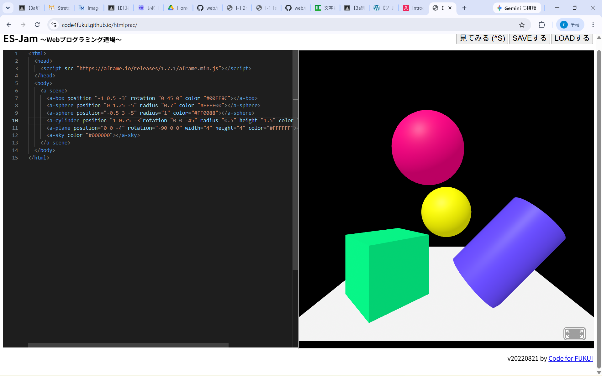
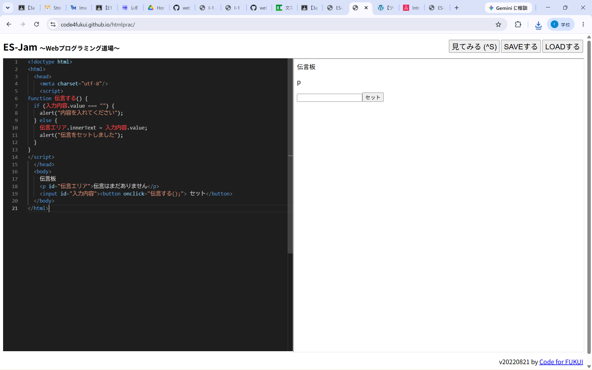

３週目のレポート ： 公大高専１年実習I-1
3a班19番 小林 史佳
第3週目
3-1 JavaScript体験：VR空間を作る

自作した３次元空間
1.内容
A-Frameを用いたWeb VRプログラムのコーディング体験を行った。
このことから、プログラミングの基礎的な構成や、各図形の動かし方や色の変え方などを学んだ。
2.感想
Scratchとは違い、本格的なプログラミングをするのは初めてのことだったので、少し手こずったところもあった。
しかし、自分で図形の角度や位置、色を変えられるのは自由度が高く、とても楽しかった。
3-2 JavaScript体験：伝言プログラムを作る

伝言板
1.内容
3-1と同様、ブラウザ上でプログラミングをして、伝言板を作成した。 このことから、打ち込んだ文字を伝言としてセットできるプログラムの作成方法を学んだ。
2.感想
3-1は、まだプログラムのテンプレートがあったのでやりやすかったが、この伝言板はほぼ1から作成したので、とても苦戦した。
時間はかかったが、その分完成度の高い伝言板を作り上げることができたので、達成感が大きかった。
各ページへのリンク
1週目のレポート
2週目のレポート
3週目のレポート
私のホームページ